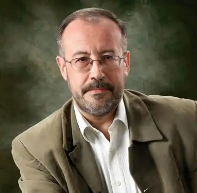
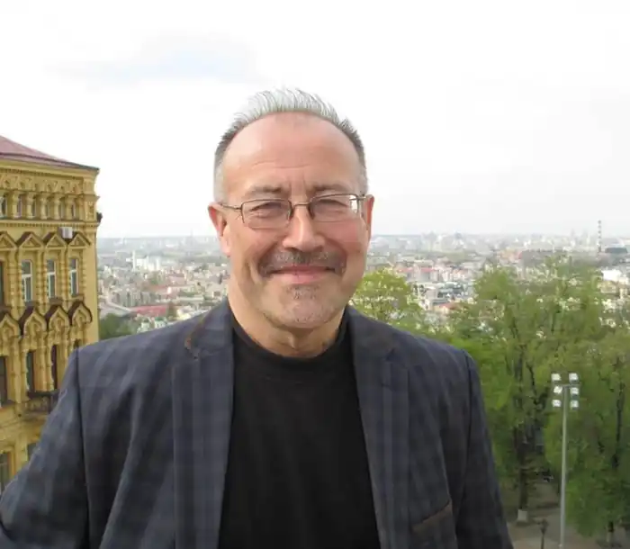
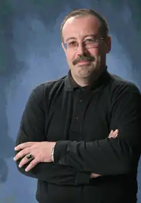

Степан Васильович Процюк – сучасний український письменник, якого вважають одним із найконтроверсійніших сучасних письменників-інтелектуалів – народився 13 серпня 1964 року в селі Кути, Бродівський район (нині — Буський район) на Львівщині у сім'ї політв'язня.
Через декілька років родина переїхала до Івано-Франківської області. Степан Процюк закінчив Івано-Франківський педінститут та аспірантуру Інституту літератури НАН України. Кандидат філологічних наук. Викладає сучасну українську літературу в Прикарпатському університеті Івано-Франківська. Одружений, має двох синів. З 1995 до 2017 був членом Національної спілки письменників України.
Літературна біографія Степана Процюка розпочалася 1991 з літгурту "Нова деґенерація", куди він входив разом із Іваном Андрусяком та Іваном Ципердюком. 1992 була надрукована їх перша поетична збірка Процюка "На вістрі двох правд" (передмова Юрія Андруховича). На думку літературознавців, на початку 90-х літгурту "Нова деґенерація" вдалося стати одним із небагатьох руйнівників літературної стагнації. Далі з'явилася збірка віршів "Апологетика на світанку" (Ужгород, 1996) та збірка поем "Завжди і ніколи" (Львів, 1999). У зв'язку з малоз'ясованими обставинами перестає писати вірші, переходячи винятково на прозу й есеїстику, зокрема, так звані письменницькі колонки в газетах України. 1996 вийшла збірка літературних есеїв Процюка "Лицарі стилосу і кав'ярень" (Київ), а також перша книжка прози "Переступ у вакуумі". 2001 тернопільське видавництво "Джура" друкує збірку повістей "Шибениця для ніжності", що заслужила чимало взаємовиключних своєю апологетичною патокою або іронічним чи навіть агресивним несприйняттям відгуків і рецензій. У повісті "Шибениця для ніжності" домінує єдина оповідна форма — сповіді головного героя Дем'яна. Приводом для її розгортання став лист колишньої коханої, написаний через двадцять років після того, як їх стосунки завершилися. Структурно повість складається із двох частин та епілогу. Перша частина починається зі спогадів про дитинство Дем'яна, розповідає про навчання в школі й перше кохання. Провідною композиційною рисою повісті є сюжетна дискретність. Життєвий шлях персонажа переказаний непослідовно, автор зупиняється на найбільш екзистенційно значимих подіях, що дозволяють глибше усвідомити еволюцію характеру. Друга частина розпочинається спогадами про навчання Дем'яна в інституті. До особистої історії додаються суспільні узагальнення, що віддзеркалюють специфіку радянського суспільства. Центральною в другій частині є історія взаємин Дем'яна й Зоряни. Поруч із життєвою історією головного героя фрагментарно згадуються історії його батьків, дядька, що став жертвою тоталітарної системи, брата Сашка — також жертви, тільки ще безглуздішої і жахливішої системи. Композиція повісті традиційна для ранньої творчості Степана Процюка: колажність, фрагментарність картин, репортажність, полеміко-публіцистичні авторські відступи. У 2002 івано-франківське видавництво "Тіповіт" друкує чергову збірку повістей "Серафими і мізантропи", де, як вказувала пізніше критика, посилюються декадентські кольори, а також нездоровий інтерес до зображення межових невротичних станів людини чи "неопшибишевщина". Для автора характерний тип героя — рефлексуючого інтелігента з сильною потребою ідеалу, в якій упізнається туга за Богом. Також 2002 Процюк дебютує як романіст. Львівська "Піраміда" друкує його "Інфекцію". Як завжди, критичних контроверсій вистачало: від тверджень про появу роману "національної честі" до роздратованих реляцій у порожнечу, мовляв, справжній українець не міг би бути таким жорстким щодо критики національних негараздів і ментальних недоладностей. Також писалося про те, що "Інфекція" є поступом щодо композиції та поетики українського роману й про те, що це взагалі не роман. Центральною в цьому творі є ідея інфікованості українства чужою мовою, культурою, способом життя. Композиційно роман складається з восьми частин, переважає оповідний наратив зі вставними критичними відступами. Автор об'єднує в одне ціле кілька сюжетних ліній. Доля наступного роману "Жертовпринесення" є трохи сумнішою. Адже у зв'язку з якимись метафізичними обставинами (може, справа у назві?) він донині не вийшов окремою книжкою. У центрі романної дії — поет із провінційної Мічурівки Максим Іщенко, який не знаходить місця в брутальному суспільстві, що живе за законами "ринкової економіки". У 2005 вийшов третій роман — "Тотем" (видавництво "Тіповіт"). У цьому творі помітне посилення інтересу до онтологічних питань: смерть і страх, фетишизація і неврози, відчай і пошуки можливих рецептів гармонії. У 2007 івано-франківське видавництво "Тіповіт" видало збірку есеїв Степана Процюка "Канатоходці". Туга за справжнім проглядає у всій книжці. Автор веде боротьбу проти напівправди і симулякрів. Ще одна грань письменницького таланту Степана Процюка — література для підлітків. У 2008 в київському видавництві "Грані-Т" побачила світ трилогія про кохання "Марійка і Костик", "Залюблені в сонце" (Друга історія Марійки і Костика), "Аргонавти" (Третя історія Марійки і Костика). Події книги розгортаються в маленькому українському місті Старомихайлівка. Герої живуть своїм цікавим життям: зустрічаються, ведуть романтичні розмови, зізнаються в коханні. У цьому ж році і в цьому видавництві в серії "Життя видатних дітей" вийшла книга "Степан Процюк про Василя Стефаника, Володимира Винниченка, Архипа Тесленка, Карла-Густава Юнга і Ніку Турбіну". Повісті для підлітків Степана Процюка критика вважає одними із найчитаніших у цій жанровій ніші. 2010 року у видавництві "Грані-Т" була видрукувана збірка есеїв "Аналіз крові". Книжка складається із 20 замальовок-роздумів на різноманітні екзистенційні, літературні та політичні теми. Єднає їх застосування класичного психоаналізу. Цей текст є втіленням концепції письма як психотерапії в прямому сенсі цього слова. Автор озвучує низку "вічних" питань. Роман "Троянда ритуального болю" (2010) – це одна з перших спроб серйозного художньо-психологічного осмислення постаті Василя Стефаника як людини й творця. Його образ подано в нестереотипних для українського літературного канону життєвих ситуаціях. У першу чергу письменника цікавили особливості психотипу героя, його загадковий внутрішній світ, трагедія душі. Наприкінці жовтня 2010 у видавництві "Ярославів вал" вийшла остання частина "психіатричної тетралогії" Степана Процюка — роман "Руйнування ляльки" (першодрук — у журналі "Кур'єр Кривбасу"). Це специфічний зразок філософської прози, не роман дій, а роман ідей, твір більше публіцистично-есеїстичний, аніж власне художній, в якому більше психології, аніж інтриг і пригод. Степан Процюк гостро розкриває проблеми нашого індивідуального й колективного буття. У психобіографічному романі С. Процюка про Володимира Винниченка "Маски опадають повільно" (2011) автор рішуче виходить за межі жанрів нарису, літературного портрета, есе-біографії, що зазвичай лягають в основу художньої біографістики, а подеколи абсолютно копіюються, і пропонує оригінальну версію психоаналітичного прочитання біографії одного з найбільш суперечливих і найцікавіших українських письменників XX ст. Перед читачем постає образ письменника-новатора європейського рівня і разом з тим — ексцентричного невротика з драматичною долею. Процюк послідовно й логічно вибудовує систему життєвих і суто психологічних координат митця. Джерельною базою роману став епістолярій і щоденники В. Винниченка. Також 2011 у видавництві "Твердиня" вийшла книга есеїстики С. Процюка "Тіні з'являються на світанку". Страх смерті, неврози безсенсовності й абсурдності життя, любовні залежності, самотність, глибинні внутрішні конфлікти — це неповний перелік того, про що пише автор, і що становить коло екзистенційних проблем сучасної людини. Наприкінці 2011 на сторінках журналу "Кур'єр Кривбасу" була надрукована повість Степана Процюка "Бийся головою до стіни" — про непрості стосунки батька, який помирає, і сина, який намагається його зрозуміти. Автор витримав цю повість на найвищому регістрі почуттів і переживань. Окремою книгою повість вийшла у березні 2013 в луцькому видавництві "Твердиня" в одній книжці разом із повістю "Гілочка і Муркотасик". У січні 2013 у київському видавництві "Академія" вийшла заключна частина психобіографічної трилогії — роман "Чорне яблуко", присвячений наймолодшому класику української літератури Архипу Тесленку. Увага Степана Процюка сконцентрована на трьох змістових домінантах. Перша — історія платонічного кохання Архипа до Оленки. Друга лінія — участь А. Тесленка в революції 1905–1907 років. Третя домінанта — історія непростих стосунків братів Архипа і Яреми, що розгорталися під знаком протистояння, почасти навіть — братоборства. Нова книга Степана Процюка "Трикутник" вийшла в квітні 2014. До неї увійшли, як повідомив сам автор, нова редакція роману "Інфекція", нові есеї та інтерв'ю. У романі "Десятий рядок" розгортаються три долі, три сюжетні лінії: діда, батька й онука. Різні покоління, різні держави, різні суспільні устрої — від сталінського геноциду до часів Незалежності. Роман, з одного боку, антитоталітарний, з іншого — глибоко філософський. У кінці квітня 2015 вийшов роман "Під крилами великої Матері". Степан Процюк мав літературні вечори у багатьох містах України (Києві і Харкові, Львові і Ялті, Тернополі й Ужгороді і т. д.), а також у Кракові (на запрошення Ягеллонського університету) та Берліні. Є лауреатом багатьох національних літературних премій: 7-разовий лауреат премії журналу "Кур'єр Кривбасу" (1998-2003 рр. включно), премії "Благовіст" (2000), а також міської літературної премії ім. І. Франка (2002) та обласної літературної премії ім. В. Стефаника. 2003 за роман "Інфекція" був номінованим на здобуття Шевченківської премії. Твори Степана Процюка перекладені кількома іноземними мовами (німецькою, російською, словацькою). Наприкінці 2008 у Баку вийшов переклад роману Степана Процюка "Тотем". Перекладав книгу відомий азербайджанський письменник та видавець Ельчин Іскендерзаде. Зараз роман перекладається ще кількома іноземними мовами. 30 вересня 2012 року на своїй сторінці у "Facebook" Степан Процюк повідомив про те, що став членом Українського центру Міжнародного ПЕН-клубу. У вересні 2015 Процюк отримав відзнаку "Золотий письменник України".